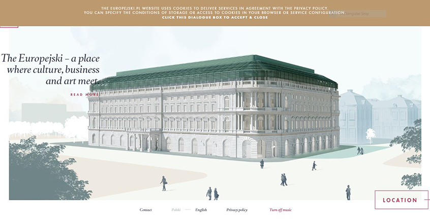

•To promote and educate travelers on the Europejski Hotel.
•Travelers, business people, and art lovers.
•Main menu is located on the right side of the page once you click on the menu symbol. Links to main page are intact and the pages design stays within its theme.
•The website flows really well and it's easy to find your way back to the main page. Its very easy to get side tracked
looking at the animations and beautiful pictures on the website. It's a very interactive page. It even has music playing while you explore it.
•The content inside is great. It carries intriguing words and looks to be very updated with information about the remodels and looks like the photos where recently taken.
•The color palette used works wonders for this site. The layout of the design is also great from a designers point of view. It flows well and uses a good grid system. However inside the menu bar the text is very large and somewhat over powering, and some of the text is smaller than the rest and looks like it was kinda thrown in there with the rest of it.
•Goals of the site are to educate people about where food comes from and how they keep is safe.
•I believe the target audience is Educators who teach young adults or kids in school who are learning food science.
•Once you go to the main page the menu is located on the bottom of the screen. I feel as if the home page is easier to navigate through then the advertising one that I had originally clicked on.
•As for usability it took me a few minutes to figure out how to scroll through the page and find the link to the main website. But once I did the rest came along quite smoothly.
•The content was interesting and engaging.
•Transitions to pages were nice and the layout kept everything together, pleasing to the eye.
•The goals of this adobe site are to help designers get inspiration and educate them on how to create their designs more swiftly. Along with that it educates designers on how to keep/get clients and how to better there game in the industry.
•The target Audience is basically anyone who participates in the design field.
•The Navigation of this page is simple and easy to use. There's a bar on the left that makes traveling down each “milestone” a breeze.
•The usability of this site is great its very straightforward.
•Content is awesome I read through the whole page and I feel that as from a designers point of view I gain a good amount of knowledge from it. It's definitely something I would revisit often, or take some notes from.
•Design of this site is complex in a way that it runs smooth as you scroll down. Along with that the design is very active with the reader.
•Goal is to spread the word about adventurous stories and sell there high end coats.
•Target is adventurers who live for the outdoors.
•Top left corner of the page contains the menu bars and helps navigate you throughout the site.
•Links work well and the site has easy access to get you back to the main page if you wander off.
•Content is favorable and makes me want to purchase a coat.
•The design of the page follows through the site and has a clean look to it. Some of the photos have a little blur to them but other then that it's good.
•Sites goal is to promote concert and events.
•Target is Dutch pop culture lovers.
•Navigation is okay. There's a lot of different links in the website that take to other pages with different layouts and color schemes. Easy to get lost if you click around the page. Not sure if they sell tickets I couldn't find it.
•Usability is good. Hard to perform some task like gain knowledge about the bands that play.
•Content looks to be updated frequently.
•Layout is pleasing to the eye, they used a grid system and the color scheme is followed through out for the most part.
•Goals of site are to inform creatives about all of the work and opportunities ueno has to provide.
•Target audiences is designs looking for a job.
•Navigating the web page is easy and all of the links are working ones. Along with that that page is very active.
•Usability is awesome, its super easy to find information and descriptions of what there looking for in employees.
•Content is great and useful job seekers in the industry.
•Layout uses a nice grid system and keeps thing tidy throughout the page.
•Goals of site are to inform creatives about all of the work and opportunities ueno has to provide.
•Target audiences is designs looking for a job.
•Navigating the web page is easy and all of the links are working ones. Along with that that page is very active.
•Usability is awesome, its super easy to find information and descriptions of what there looking for in employees.
•Content is great and useful job seekers in the industry.
•Layout uses a nice grid system and keeps thing tidy throughout the page.
•Site Goals is to involve ESPN FC fans and give them more information on the players and their ranks.
•Target is sports fans more specifically soccer fans.
•Navigating the site is a breeze. Its straight to the point and takes you where you wanna go.
•Easy to perform task like find your favorite player and learn more about the game.
•Content is good and gives you the details on players, like there worth. Doesn't seem to be updated often though. The dates given on the ranks are back in 2016.
•The design has a doodle feel and is played along throughout the site.
9. https://maxchocolatier.com/de-CH
•Sites goal is to promote and sell there chocolate.
•Target is really broad and could go as far to say anyone.
•Navigation is a breeze with the menu bar located at the top of the page. Keeps you going where you wanna go, super simple to explore, other then the fact some text is in a different language.
•Use of page is ideal and up to par. Really make you want to buy there chocolate and its easily setup to browser there large selection.
•Content is great and really draws you in.
•Layout is though a grid and fills the site with good resolution photos that match the color scheme.
•Sites goals is to give inspiration to interior designers..
•Target audience is interior designers and creatives.
Navigating the page is easy and the links are all working ones.
•Simple to use and find interesting articles or merchandise.
•Content is updated and clever. Also very informational on types of styles to choose from.
•Design of website looks to be well thought out and gives a crisp clean look to it.